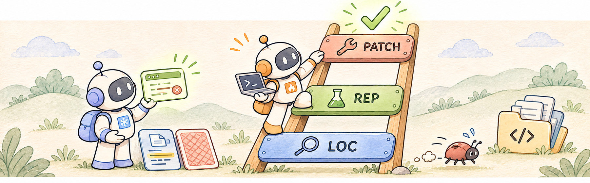

博客2026 年 11 月 15 日代码智能体 · 强化学习阅读约 12 分钟
SWE-Ladder: Learning to Localize, Reproduce, and Patch via Progressive Privileged Self-Distillation
软件工程智能体要找到 bug、复现 bug、再修复它，但训练信号通常只有最后的一次测试结果。SWE-Ladder 只把已验证修复中与当前阶段相关的部分交给冻结的教师模型，并按修复的先后顺序逐级训练各个阶段。

概要
解决一个代码仓库 issue 需要三种能力：定位出错的代码，复现故障，再给代码打补丁。强化学习只凭最终补丁的一次测试结果，同时训练这三种能力。On-policy 自蒸馏引入了能看到特权证据的教师，但实际做法是每一步都把完整的参考补丁给教师看。这样，智能体还在摸索该看哪里，教师就已经知道该改什么。
SWE-Ladder 把每个训练 issue 的已验证修复拆成三份证据：用于定位的改动文件和行号，用于复现的 fail-to-pass 测试，用于修复的 diff。基于规则的路由器根据工具调用，给端到端 rollout 的每一步标上所属阶段；冻结的教师只看到对应阶段的证据。三个阶段按修复顺序逐个蒸馏，GRPO 则始终优化整条轨迹。
在 SWE-bench Verified 上，SWE-Ladder 把 Qwen3-4B-Instruct-2507 的 pass@1 从 9.6% 提升到 16.4%，GRPO 为 10.4%，看完整补丁的教师为 12.4%。在 OpenHands 框架下，SWE-Ladder 从 13.0% 提升到 17.6%，而所有基线都不高于基座模型。把阶段顺序反过来，结果降到 11.4%。
1单一奖励和完整补丁各缺什么
SWE 智能体要经过几十次工具调用来修改代码仓库，而常用的训练信号只是最终补丁能否通过指定测试，很难看出失败是哪个决策造成的。为了弄清不同信号到底教会了什么，我们在 SWE-bench Verified 上除了 pass@1，还统计了三种中间行为：智能体是否修改了参考修复改动过的文件（定位）；是否编写并运行了能复现故障的脚本（复现）；最后一次修改后，是否重新运行该脚本并成功通过（验证）。
结果有两点比较明显。结果奖励不能稳定提升这些行为：用 GRPO 训练后，pass@1 几乎没变，只从 9.6% 升到 10.4%，复现却从 59.4% 降到 48.6%。让教师看完整补丁能提高 pass@1，但修改后的验证变少了，从 22.6% 降到 16.2%。在定位步骤里，教师已经看到了替换后的代码，会倾向于直接改代码，而不是继续搜索。已有工作在单轮推理中报告过同样的现象：教师以完整参考答案为条件时，学生会跳过中间步骤，验证也更少。
每一步只让教师看到已验证修复中当前阶段需要的那部分；各阶段按修复时用到它们的顺序来教：先找到代码，再把故障实际复现出来，最后修复。
2SWE-Ladder
SWE-Ladder 训练的是一个端到端智能体。它不限制智能体调用哪些工具，只决定教师能看到哪些证据、监督哪些 token。图 1 先用论文中一条真实的 21 步 rollout 演示路由器如何打标签，再依次展示三个训练阶段。
学生 rollout · 一个 oauthlib issue，共 21 步，由路由器标注阶段
冻结的教师 · 与学生同一基座模型 · 只能看到
rollout 上的蒸馏掩码
L = LGRPO + 0.15 · LOPSD(当前阶段)
把每一步分到对应阶段
路由器是一个确定性的、工作在工具层面的状态机，给每一步打标签。创建或运行文件名含 repro 的文件、编辑测试文件、运行测试套件，都会提议进入 REP；编辑其他源文件，提议进入 PATCH；搜索、查看文件和只读的 shell 命令都算探索。提议只能让状态按 LOC → REP → PATCH 的顺序前进，回退规则则取决于当前状态：处于 REP 时，连续三次探索会回到 LOC；处于 PATCH 时，运行一次测试就退回 REP，探索一次就回到 LOC。这些标签只决定教师的上下文和蒸馏掩码，不会截断 rollout，也不改变奖励。
在 2,261 个留出的、带阶段标注的步骤上，路由器与参考标签的一致率为 92.0%。学习得到的 TF-IDF 分类器一致率达到 98.63%，训出的智能体反而更差：它对每一步独立预测，把轨迹切成零散的标签；带状态的规则则能产生连续的阶段块。
分阶段的证据
所有证据都来自每个训练 issue 的已验证修复，不用任何外部模型生成内容。教师的提示词与学生共用同样的系统指令和任务提示，区别只在末尾附加的证据块。
| 阶段 | 教师看到的内容 | 新增 token 数（中位数 / 均值） |
|---|---|---|
| LOC | 改动的非测试文件路径、旧版本一侧的 hunk 范围和修改前的源代码行，不含替换后的代码 | 406 / 544 |
| REP | fail-to-pass 测试的标识符和名称、参考测试代码，以及候选测试改动（如有） | 1,249 / 2,928 |
| PATCH | 已验证的修复 diff | 669 / 907 |
| 三者全部（不做路由） | 三者的并集，也就是完整参考教师看到的内容 | 2,709 / 4,375 |
按修复顺序逐级训练
训练共 70 轮迭代，分三个阶段，每个阶段从上一阶段的检查点接着训：LOC 30 轮，REP 20 轮，PATCH 20 轮。每个阶段里，教师是基座检查点的冻结副本，以该阶段的证据为条件；top-16 的 token 级蒸馏损失只作用于标为当前阶段的回复 token，权重 λ = 0.15。GRPO 全程作用于所有有效回复 token。这个顺序对应修复过程使用证据的方式：on-policy 蒸馏只监督学生实际到达的状态，学生要先能找到该改的代码，补丁证据才派得上用场；复现脚本则是学生之后检查补丁时要运行的。
3实验结果
所有方法都从 Qwen3-4B-Instruct-2507 出发，不做针对任务的监督微调，在来自 SWE-smith、SWE-ReBench、R2E-Gym 和 SWE-Gym 的 1,149 个 issue 上训练，每轮迭代 16 个任务 × 4 条 rollout。评测用 SWE-bench Verified 的 500 个 issue，分别在 R2E-Gym 和 OpenHands 两种框架下运行。
SWE-bench Verified, n = 500
pass@1 (%)
在 R2E-Gym 上，SWE-Ladder 的 pass@1 达到 16.4%，GRPO 为 10.4%，GRPO+OPSD 为 12.4%。它的平均步数也比基座模型少（19.3 对 26.5），98.6% 的轨迹能跑完；GRPO 在资源上限之前只跑完了 36.0%。SDAR 是一种带门控的蒸馏方法，拿到同样的补丁证据，结果降到 4.6%。在 OpenHands 上，三个基线最终都不高于基座模型的 13.0%（GRPO 11.2%，GRPO+OPSD 12.4%，SDAR 6.8%），SWE-Ladder 则达到 17.6%，平均 16.6 步，完成率 99.4%。
4逐级训练中的能力变化
我们评测每个阶段结束时的检查点 LOC30、REP50 和 PATCH70，同时跟踪三种行为和 pass@1（图 3）。LOC 阶段让四项指标都有提升。REP 阶段继续提升定位，但复现和验证跌到基座模型以下。PATCH 阶段把这两项拉了回来，PATCH70 最终在四项指标上都超过基座模型，是对比方法中唯一做到这一点的。
R2E-Gym，各阶段结束时
相对基座模型的变化（百分点）
5哪些设计起作用
每个阶段都有贡献，只做路由不够。从训练计划中去掉 LOC、REP 或 PATCH，pass@1 分别从 16.4% 降到 11.2%、13.2% 和 14.0%，而且这些变体的复现和验证都低于基座模型。去掉 LOC 影响最大，这与定位是其他阶段的基础相符。三个阶段同时训练时，每个路由出的 token 子集仍用各自的证据蒸馏，只是不分先后，结果只有 12.4%，复现（35.6%）和验证（12.6%）也都下降。
阶段消融，R2E-Gym
相对基座模型的变化（百分点）
顺序很重要。同样按 30/20/20 分配迭代轮数，把顺序反过来（PATCH → REP → LOC）只有 11.4%；先训练复现（REP → LOC → PATCH）为 12.6%，尽管 PATCH 仍在最后。这两种顺序的步数也更多。证据必须与它监督的阶段对应：在 30 轮迭代的预算下，用 LOC 证据监督 LOC token 得到 14.4%，换成补丁证据为 13.6%；用补丁证据监督 PATCH token 得到 13.2%，换成定位证据为 11.8%，因为定位证据透露的信息太少，不足以写出修复。
训练顺序，70 轮迭代
pass@1 (%)
证据与被监督阶段，30 轮迭代
pass@1 (%)
6训练动态
对比前 10 轮和最后 10 轮迭代，GRPO 的优化信号明显变差：平均熵从 0.0300 降到 0.0061，梯度范数从 1.820 降到 0.187，训练奖励从 0.236 降到 0.055，回复长度却几乎翻倍，从 8.29k 增加到 16.73k token。SWE-Ladder 更稳定：熵 0.0251 → 0.0221，梯度范数 2.353 → 2.397，回复长度只从 10.09k 小幅增加到 11.62k token。GRPO+OPSD 和 SDAR 在训练后期同样保留了优化信号，所以熵或梯度幅值没有衰减，本身并不能解释 SWE-Ladder 在留出集上的结果。以上均为单次运行，没有用不同随机种子重复。
| 前 10 轮 → 最后 10 轮 | 熵 | 梯度范数 | 回复 token 数 |
|---|---|---|---|
| GRPO | 0.0300 → 0.0061 | 1.820 → 0.187 | 8.29k → 16.73k |
| SWE-Ladder | 0.0251 → 0.0221 | 2.353 → 2.397 | 10.09k → 11.62k |
引用
@article{cai2026sweladder,
title = {SWE-Ladder: Learning to Localize, Reproduce, and Patch via Progressive Privileged Self-Distillation},
author = {Cai, Xudong and Lu, Zhengxi and Yan, Yuchen and Shao, Jian and Xiao, Jun and Zhuang, Yueting and Shen, Yongliang},
journal = {arXiv preprint arXiv:2610.33667},
year = {2026}
}参考文献
- Jimenez et al. (2024). SWE-bench: Can Language Models Resolve Real-World GitHub Issues? ICLR.
- Xia et al. (2024). Agentless: Demystifying LLM-based Software Engineering Agents.
- Jain et al. (2025). R2E-Gym: Procedural Environments and Hybrid Verifiers for Scaling Open-Weights SWE Agents.
- Wang et al. (2025). OpenHands: An Open Platform for AI Software Developers as Generalist Agents. ICLR.
- Shao et al. (2024). DeepSeekMath: Pushing the Limits of Mathematical Reasoning in Open Language Models (GRPO).
- Agarwal et al. (2024). On-Policy Distillation of Language Models: Learning from Self-Generated Mistakes. ICLR.
训练配置、奖励设计和完整的证据样例见论文。